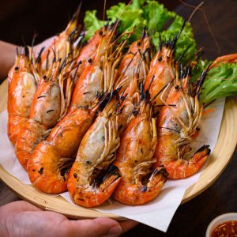
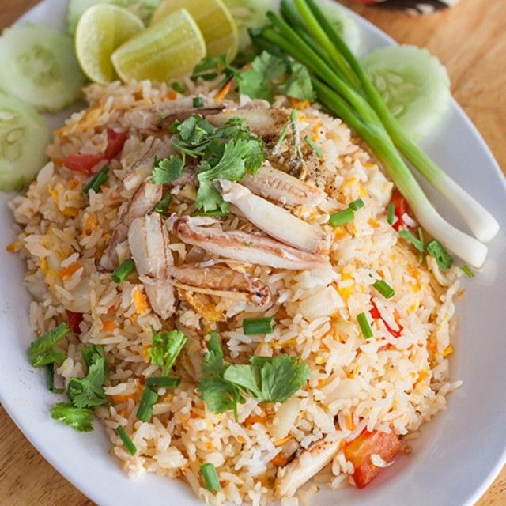

อาหารและของฝาก
อาหารพื้นถิ่น
แนะนำเมนูเด่นของชุมชน
- อาหารทะเล เมนูยอดฮิตติดอันดับ
- ข้าวผัดทะเล เมนูติดโต๊ะที่ต้องมีร่วม


ของฝากจากชุมชน
แนะนำผลิตภัณฑ์ท้องถิ่นและจุดจำหน่ายที่ผู้เดินทางแวะได้
- กล้วยฉาบสมุนไพรและผลไม้อบแห้ง: กลุ่มแม่บ้านเกษตรกร วางจำหน่ายที่ศูนย์ OTOP ชุมชน
- ผ้าทอมือย้อมสีธรรมชาติ: ลวดลายเอกลักษณ์ประจำถิ่น เหมาะสำหรับเป็นของขวัญ
- น้ำพริกเผากุ้งแห้ง: บรรจุกระปุกอย่างดี พกพาสะดวก เก็บได้นาน